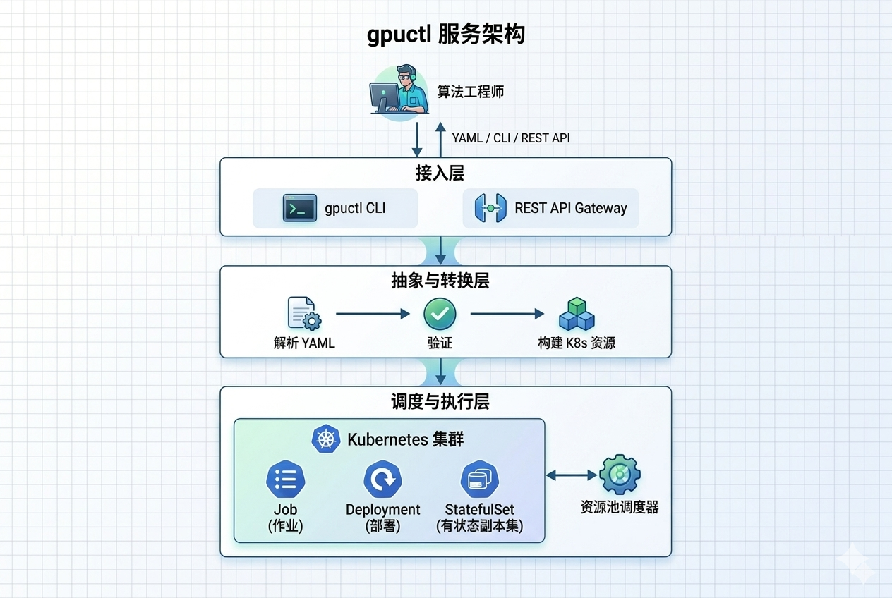

GPUCTL · AI 算力调度平台¶
-
无需了解 Kubernetes
用算法工程师熟悉的声明式 YAML，提交训练、推理、Notebook 任务，平台自动完成底层调度。
-
GPU 资源池化管理
将集群 GPU 节点划分为逻辑资源池，实现训练/推理/实验资源隔离，避免争抢。
-
简洁的 CLI 命令
gpuctl create / get / logs / delete，与 kubectl 对标但更贴近算法工程师使用习惯。 -
RESTful API
完整的 REST API 支持，可集成到现有 MLOps 平台或第三方工具链。
-
统一观测
日志、事件、资源用量一站式查看。
gpuctl logs <job-name>直接查看，告别 kubectl get pods 找 Pod 名的繁琐。 -
自动配额
Namespace 级配额自动创建，CPU / Memory / GPU 限额一键查看，超限自动拦截并给出友好提示。
产品简介¶
gpuctl 是一个面向算法工程师的 AI 算力调度平台，旨在显著降低 GPU 算力的使用门槛。
通过声明式 YAML 配置和简单的 CLI 命令，算法工程师无需掌握 Kubernetes 等底层基础设施的复杂知识，即可高效提交和管理 AI 训练与推理任务。
解决的核心痛点¶
| 痛点 | 具体表现与影响 | gpuctl 解法 |
|---|---|---|
| 😰 K8s 学习成本高 Pod、Deployment、Service 概念复杂 |
算法工程师需要花费数周学习 Kubernetes 概念，理解 PodSpec、ResourceRequirements、VolumeMounts 等复杂配置。提交任务前需要编写 100+ 行 YAML，涉及多个资源对象（Secret、ConfigMap、Job），学习曲线陡峭，上手困难 | 声明式 YAML，只需填写熟悉的字段 用算法工程师熟悉的 kind、job.name、resources.gpu 等字段描述任务，15-20 行配置即可完成训练任务提交，无需理解底层 K8s 资源对象 |
| 😤 GPU 环境配置繁琐 驱动、CUDA、NCCL 依赖复杂 |
每次新建环境都需要手动安装 GPU 驱动、CUDA Toolkit、cuDNN，配置 NCCL 多卡通信环境变量，安装 DeepSpeed、VLLM 等框架及其依赖。版本冲突频发，环境搭建耗时数小时甚至数天 | 镜像中预装，platform 自动注入环境变量 提供预装 DeepSpeed、VLLM、LlamaFactory 的官方镜像，平台自动注入 NCCL_SOCKET_IFNAME、MASTER_ADDR、WORLD_SIZE 等环境变量，无需手动配置分布式训练参数 |
| 😫 多团队 GPU 资源争抢 缺乏资源隔离机制 |
训练、推理、实验任务混跑在同一个集群，没有资源隔离导致重要任务被低优先级任务抢占 GPU。某团队跑大模型训练占满所有卡，其他团队任务只能排队等待，严重影响研发效率和团队协作 | 资源池隔离 + 配额管理 将集群划分为训练池、推理池、开发池等逻辑资源池，实现物理隔离。支持按 Namespace 设置 CPU/Memory/GPU 配额，超限自动拦截，确保各团队资源公平使用 |
| 😵 多 GPU 训练配置复杂 NCCL、DeepSpeed 参数繁琐 |
单机多卡训练需要手动配置 NCCL 环境变量、DeepSpeed hostfile、PyTorch 启动参数，理解进程组、通信后端、梯度同步等概念。配置错误导致训练卡死或效率低下，调试困难 | 声明 gpu 数量，自动注入 NCCL/DeepSpeed 配置 只需在 YAML 中声明 resources.gpu: 4，平台自动生成 DeepSpeed 配置文件，注入 NCCL 环境变量，完成进程组初始化，算法工程师无需关心底层分布式细节 |
| 😵💫 任务状态查看繁琐 Pod 名称随机难记 |
使用 kubectl 需要记住随机生成的 Pod 名称（如 training-job-7d9f4b8c5-x2mnp），先 get jobs 找到 Job，再 get pods 找到 Pod，最后 describe pod 查看详情。Pod 重启后名称变化需要重新查找，流程繁琐耗时 | 用任务名直接操作，自动追踪 Pod 变化 gpuctl get jobs 查看所有任务状态，gpuctl logs job-name 直接查看日志，支持多副本聚合。自动追踪 Pod 重建和状态变化，算法工程师只需记住自己定义的任务名 |
系统架构¶

支持的任务类型¶
适合 LLM 微调（LlamaFactory + DeepSpeed）、分布式训练等场景。底层转换为 K8s Job。
kind: training
version: v0.1
job:
name: qwen2-7b-sft
priority: high
environment:
image: registry.example.com/llama-factory-deepspeed:v0.8.0
command: ["llama-factory-cli", "train", "--stage", "sft", "--model_name_or_path", "/models/qwen2-7b"]
resources:
pool: training-pool
gpu: 4
gpu-type: A100-100G
cpu: 32
memory: 128Gi
适合 VLLM 推理服务部署，支持自动扩缩容。底层转换为 K8s Deployment + Service + HPA。
适合交互式调试开发，提供 JupyterLab 环境。底层转换为 K8s StatefulSet + Service。
快速体验¶
# 1. 安装
pip install -e .
# 2. 提交训练任务
gpuctl create -f training-job.yaml
# 3. 查看任务状态
gpuctl get jobs
# 4. 实时日志
gpuctl logs qwen2-7b-sft -f
# 5. 删除任务
gpuctl delete job qwen2-7b-sft